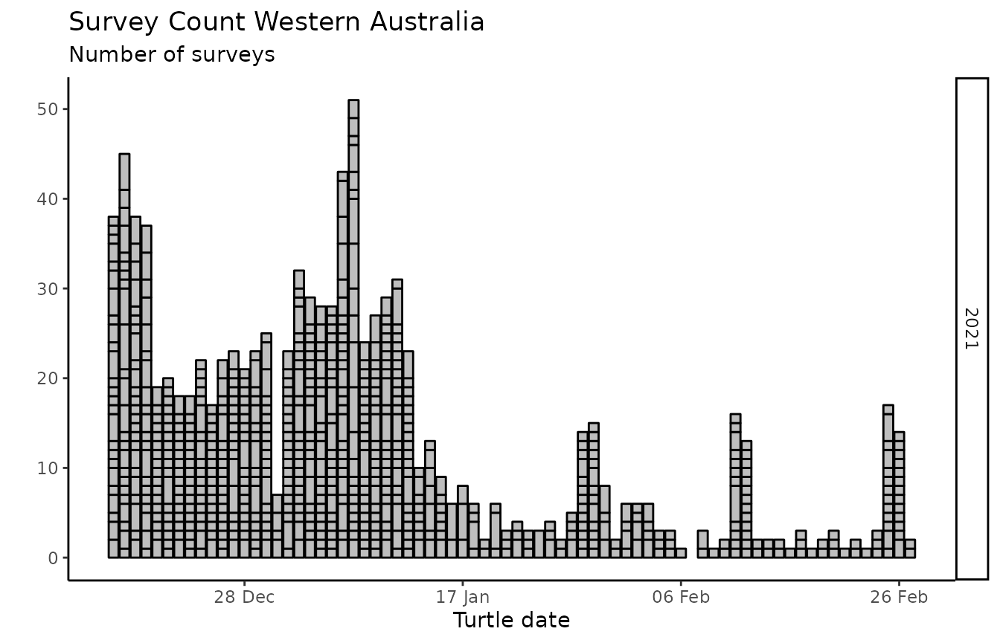

Data analysis - Producing insight from WAStD
Florian Mayer, North West Shelf Flatbacks WA
2020-03-12 09:49:35
Source:vignettes/analysis.Rmd
analysis.RmdData
Filter data
To filter records to one area, we can either filter by area or site ID (once enabled), or simply filter by a bounding box. Additionaly, we’ll filter by date.
Site names and IDs are only correct at the time of writing. As they could change, please double-check the correct spelling of your own place names and their IDs in WAStD.
tracks_2017 <- wastd_data$tracks %>% dplyr::filter(season==2017)Turtle Tracks and Nests
This section demonstrates the summary and visualisation utilities for tracks.
The data shown here will make absolutely no sense, as it contains training and dummmy data.
Maps
Each track on the map has a popup with a link to the actual record on WAStD. Accessing and editing the record is restricted to authorised DBCA staff members.
Map markers can be grouped or not.
Non-grouped markers show the actual location more accurately, but can overlap to the point where it is not possible to open the popups.
Grouped markers in densely populated locations will expand to prevent the overlap of markers and popups.
Use “Place names” where the aerial imagery is not available at the zoom level required for the grouped markers to expand.
wastd_data$tracks %>%
add_nest_labels() %>%
map_tracks(sites = wastd_data$sites)
# Many tracks display more performant when clustered
wastd_data$tracks %>%
add_nest_labels() %>%
map_tracks(sites = wastd_data$sites, cluster=T)Nesting success - tracks with nest vs the rest
Overview tables are available for the most common summaries at the most common groupings (season, week, day / area, site).
wastd_data$tracks %>% nesting_type_by_season_species() %>% knitr::kable()| season | species | false-crawl | hatched-nest | nest | successful-crawl | track-not-assessed | track-unsure |
|---|---|---|---|---|---|---|---|
| 2009 | natator-depressus | 0 | 2 | 1 | 0 | 0 | 0 |
| 2015 | natator-depressus | 0 | 1 | 0 | 0 | 0 | 0 |
| 2016 | chelonia-mydas | 15 | 0 | 0 | 3 | 37 | 4 |
| 2016 | cheloniidae-fam | 0 | 0 | 0 | 1 | 12 | 1 |
| 2016 | corolla-corolla | 1 | 0 | 0 | 2 | 4 | 0 |
| 2016 | eretmochelys-imbricata | 5 | 1 | 0 | 1 | 0 | 0 |
| 2016 | natator-depressus | 4 | 0 | 1 | 1 | 3 | 0 |
wastd_data$tracks %>% nesting_type_by_area_season_species() %>% knitr::kable()| area_name | season | species | false-crawl | hatched-nest | nest | successful-crawl | track-not-assessed | track-unsure |
|---|---|---|---|---|---|---|---|---|
| NA | 2009 | natator-depressus | 0 | 2 | 1 | 0 | 0 | 0 |
| NA | 2015 | natator-depressus | 0 | 1 | 0 | 0 | 0 | 0 |
| NA | 2016 | chelonia-mydas | 15 | 0 | 0 | 3 | 37 | 4 |
| NA | 2016 | cheloniidae-fam | 0 | 0 | 0 | 1 | 12 | 1 |
| NA | 2016 | corolla-corolla | 1 | 0 | 0 | 2 | 4 | 0 |
| NA | 2016 | eretmochelys-imbricata | 5 | 1 | 0 | 1 | 0 | 0 |
| NA | 2016 | natator-depressus | 4 | 0 | 1 | 1 | 3 | 0 |
wastd_data$tracks %>% nesting_type_by_site_season_species() %>% knitr::kable()| area_name | site_name | season | species | false-crawl | hatched-nest | nest | successful-crawl | track-not-assessed | track-unsure |
|---|---|---|---|---|---|---|---|---|---|
| NA | NA | 2009 | natator-depressus | 0 | 2 | 1 | 0 | 0 | 0 |
| NA | NA | 2015 | natator-depressus | 0 | 1 | 0 | 0 | 0 | 0 |
| NA | NA | 2016 | chelonia-mydas | 15 | 0 | 0 | 3 | 37 | 4 |
| NA | NA | 2016 | cheloniidae-fam | 0 | 0 | 0 | 1 | 12 | 1 |
| NA | NA | 2016 | corolla-corolla | 1 | 0 | 0 | 2 | 4 | 0 |
| NA | NA | 2016 | eretmochelys-imbricata | 5 | 1 | 0 | 1 | 0 | 0 |
| NA | NA | 2016 | natator-depressus | 4 | 0 | 1 | 1 | 3 | 0 |
wastd_data$tracks %>% nesting_type_by_season_week_species() %>% knitr::kable()| season | season_week | iso_week | species | false-crawl | hatched-nest | nest | successful-crawl | track-not-assessed | track-unsure |
|---|---|---|---|---|---|---|---|---|---|
| 2016 | 20 | 46 | chelonia-mydas | 7 | 0 | 0 | 2 | 3 | 3 |
| 2016 | 20 | 46 | cheloniidae-fam | 0 | 0 | 0 | 1 | 2 | 0 |
| 2016 | 20 | 46 | corolla-corolla | 1 | 0 | 0 | 2 | 4 | 0 |
| 2016 | 20 | 46 | eretmochelys-imbricata | 5 | 1 | 0 | 1 | 0 | 0 |
| 2016 | 20 | 46 | natator-depressus | 1 | 0 | 1 | 1 | 1 | 0 |
wastd_data$tracks %>% nesting_type_by_season_day_species() %>% knitr::kable()| season | turtle_date | species | nest_type | n |
|---|---|---|---|---|
| 2009 | 2010-03-03 | natator-depressus | hatched-nest | 2 |
| 2009 | 2010-03-03 | natator-depressus | nest | 1 |
| 2015 | 2015-10-28 | natator-depressus | hatched-nest | 1 |
| 2016 | 2016-11-14 | corolla-corolla | successful-crawl | 2 |
| 2016 | 2016-11-15 | chelonia-mydas | track-unsure | 1 |
| 2016 | 2016-11-15 | eretmochelys-imbricata | successful-crawl | 1 |
| 2016 | 2016-11-15 | natator-depressus | nest | 1 |
| 2016 | 2016-11-15 | natator-depressus | successful-crawl | 1 |
| 2016 | 2016-11-15 | natator-depressus | track-not-assessed | 1 |
| 2016 | 2016-11-16 | corolla-corolla | track-not-assessed | 1 |
| 2016 | 2016-11-17 | cheloniidae-fam | successful-crawl | 1 |
| 2016 | 2016-11-17 | corolla-corolla | track-not-assessed | 3 |
| 2016 | 2016-11-18 | chelonia-mydas | false-crawl | 15 |
| 2016 | 2016-11-18 | chelonia-mydas | successful-crawl | 3 |
| 2016 | 2016-11-18 | chelonia-mydas | track-not-assessed | 37 |
| 2016 | 2016-11-18 | chelonia-mydas | track-unsure | 3 |
| 2016 | 2016-11-18 | cheloniidae-fam | track-not-assessed | 12 |
| 2016 | 2016-11-18 | cheloniidae-fam | track-unsure | 1 |
| 2016 | 2016-11-18 | corolla-corolla | false-crawl | 1 |
| 2016 | 2016-11-18 | eretmochelys-imbricata | false-crawl | 5 |
| 2016 | 2016-11-18 | eretmochelys-imbricata | hatched-nest | 1 |
| 2016 | 2016-11-18 | natator-depressus | false-crawl | 4 |
| 2016 | 2016-11-18 | natator-depressus | track-not-assessed | 2 |
# Track success by day and species
wastd_data$tracks %>% track_success() %>% knitr::kable()| season | turtle_date | species | all | successful | track_success |
|---|---|---|---|---|---|
| 2016 | 2016-11-14 | corolla-corolla | 2 | 2 | 100.000000 |
| 2016 | 2016-11-15 | chelonia-mydas | 1 | 0 | 0.000000 |
| 2016 | 2016-11-15 | eretmochelys-imbricata | 1 | 1 | 100.000000 |
| 2016 | 2016-11-15 | natator-depressus | 2 | 1 | 50.000000 |
| 2016 | 2016-11-16 | corolla-corolla | 1 | 0 | 0.000000 |
| 2016 | 2016-11-17 | cheloniidae-fam | 1 | 1 | 100.000000 |
| 2016 | 2016-11-17 | corolla-corolla | 3 | 0 | 0.000000 |
| 2016 | 2016-11-18 | chelonia-mydas | 58 | 3 | 5.172414 |
| 2016 | 2016-11-18 | cheloniidae-fam | 13 | 0 | 0.000000 |
| 2016 | 2016-11-18 | corolla-corolla | 1 | 0 | 0.000000 |
| 2016 | 2016-11-18 | eretmochelys-imbricata | 5 | 0 | 0.000000 |
| 2016 | 2016-11-18 | natator-depressus | 6 | 0 | 0.000000 |
# Track success by species
wastd_data$tracks %>%
track_success() %>%
track_success_by_species() %>%
knitr::kable()| season | species | mean_nesting_success | sd_nesting_success |
|---|---|---|---|
| 2016 | chelonia-mydas | 2.59 | 3.66 |
| 2016 | cheloniidae-fam | 50.00 | 70.71 |
| 2016 | corolla-corolla | 25.00 | 50.00 |
| 2016 | eretmochelys-imbricata | 50.00 | 70.71 |
| 2016 | natator-depressus | 25.00 | 35.36 |
wastd_data$tracks %>%
track_success %>%
ggplot_track_success_by_date(
"natator-depressus", placename="Test place", prefix="TEST")
wastd_data$tracks %>%
track_success %>%
ggplot_track_successrate_by_date(
"natator-depressus", placename="Test place", prefix="TEST")
Nest excavations: Hatching and emergence success
wastd_data$tracks %>% hatching_emergence_success() %>% knitr::kable()| season | species | count | clutch_size_fresh | clutch_size_mean | clutch_size_sd | clutch_size_min | clutch_size_max | hatching_success_mean | hatching_success_sd | hatching_success_min | hatching_success_max | emergence_success_mean | emergence_success_sd | emergence_success_min | emergence_success_max |
|---|
wastd_data$tracks %>% hatching_emergence_success_area() %>% knitr::kable()| area_name | season | species | count | clutch_size_fresh | clutch_size_mean | clutch_size_sd | clutch_size_min | clutch_size_max | hatching_success_mean | hatching_success_sd | hatching_success_min | hatching_success_max | emergence_success_mean | emergence_success_sd | emergence_success_min | emergence_success_max |
|---|
wastd_data$tracks %>% hatching_emergence_success_site() %>% knitr::kable()| site_name | season | species | count | clutch_size_fresh | clutch_size_mean | clutch_size_sd | clutch_size_min | clutch_size_max | hatching_success_mean | hatching_success_sd | hatching_success_min | hatching_success_max | emergence_success_mean | emergence_success_sd | emergence_success_min | emergence_success_max |
|---|
Tagged nests
wastd_data$nest_tags %>% map_nests()Disturbed nests
wastd_data$tracks %>% dplyr::filter(disturbance == "present") %>% add_nest_labels() %>% map_tracks(sites = wastd_data$sites)wastd_data$tracks %>% dplyr::filter(disturbance == "present") %>% add_nest_labels() %>% map_tracks(sites = wastd_data$sites, cluster=T)Disturbances and predation
wastd_data$nest_dist %>% disturbance_by_season() %>% knitr::kable()| season | disturbance_cause | encounter_type | n |
|---|---|---|---|
| 2017 | dingo | nest | 24 |
| 2017 | dog | nest | 2 |
| 2017 | goanna | nest | 2 |
| 2017 | unknown | nest | 2 |
| 2017 | vehicle | nest | 2 |
| 2017 | other | nest | 1 |
| 2017 | turtle | nest | 1 |
| 2017 | fox | other | 12 |
| 2017 | human | other | 9 |
| 2017 | vehicle | other | 8 |
| 2017 | goanna | other | 5 |
| 2017 | dingo | other | 4 |
| 2017 | bandicoot | other | 3 |
| 2017 | other | other | 2 |
| 2017 | bird | other | 1 |
| 2017 | croc | other | 1 |
| 2017 | dog | other | 1 |
| 2017 | pig | other | 1 |
| 2016 | human | nest | 3 |
| 2016 | unknown | nest | 3 |
| 2016 | bird | nest | 2 |
| 2016 | crab | nest | 2 |
| 2016 | croc | nest | 2 |
| 2016 | bandicoot | nest | 1 |
| 2016 | dingo | nest | 1 |
| 2016 | dog | nest | 1 |
| 2016 | fox | nest | 1 |
| 2016 | other | nest | 1 |
| 2016 | tide | nest | 1 |
| 2016 | turtle | nest | 1 |
wastd_data$nest_dist %>% map_dist()wastd_data$nest_dist %>% map_dist(cluster=T)Surveys
wastd_data$surveys %>% surveys_per_site_name_and_date() %>% knitr::kable()| season | turtle_date | site_name | n |
|---|---|---|---|
| 2017 | 2017-08-14 | Langgi | 1 |
| 2017 | 2017-08-14 | Smokey Bay | 1 |
| 2017 | 2017-11-01 | Cable Beach Broome Sector 3 | 1 |
| 2017 | 2017-11-02 | Cable Beach Broome Sector 3 | 1 |
| 2017 | 2017-11-06 | Cable Beach Broome Sector 3 | 1 |
| 2017 | 2017-11-10 | Cable Beach Broome Sector 3 | 1 |
| 2017 | 2017-11-15 | Cable Beach Broome Sector 3 | 1 |
| 2017 | 2017-11-16 | Cable Beach Broome Sector 3 | 1 |
| 2017 | 2017-11-17 | Cable Beach Broome Sector 3 | 2 |
| 2017 | 2017-11-19 | Cable Beach Broome Sector 3 | 1 |
| 2017 | 2017-11-20 | Cable Beach Broome Sector 3 | 1 |
| 2017 | 2017-11-21 | Cable Beach Broome Sector 3 | 1 |
| 2017 | 2017-11-24 | Cable Beach Broome Sector 3 | 1 |
| 2017 | 2017-11-25 | Cable Beach Broome Sector 3 | 1 |
| 2017 | 2017-11-27 | Cable Beach Broome Sector 3 | 1 |
| 2017 | 2017-11-29 | Cable Beach Broome Sector 3 | 1 |
| 2017 | 2017-12-01 | Cable Beach Broome Sector 3 | 1 |
| 2017 | 2017-12-02 | Cable Beach Broome Sector 3 | 1 |
| 2017 | 2017-12-03 | Cable Beach Broome Sector 3 | 1 |
| 2017 | 2017-12-08 | Cable Beach Broome Sector 3 | 1 |
| 2017 | 2017-12-09 | Cable Beach Broome Sector 3 | 1 |
| 2017 | 2017-12-10 | Cable Beach Broome Sector 3 | 1 |
| 2017 | 2017-12-11 | Cable Beach Broome Sector 3 | 1 |
| 2017 | 2017-12-12 | Cable Beach Broome Sector 3 | 1 |
| 2017 | 2017-12-13 | Cable Beach Broome Sector 3 | 1 |
| 2017 | 2017-12-14 | Cable Beach Broome Sector 3 | 1 |
| 2017 | 2017-12-15 | Cable Beach Broome Sector 3 | 1 |
| 2017 | 2017-12-28 | Cable Beach Broome Sector 3 | 1 |
| 2017 | 2017-12-31 | Cable Beach Broome Sector 3 | 1 |
| 2017 | 2018-01-04 | Cable Beach Broome Sector 3 | 1 |
| 2017 | 2018-01-06 | Cable Beach Broome Sector 3 | 1 |
| 2017 | 2018-01-07 | Cable Beach Broome Sector 3 | 1 |
| 2017 | 2018-01-09 | Cable Beach Broome Sector 3 | 1 |
| 2017 | 2018-01-13 | Cable Beach Broome Sector 3 | 1 |
| 2017 | 2018-01-18 | Cable Beach Broome Sector 3 | 1 |
| 2017 | 2018-01-19 | Cable Beach Broome Sector 3 | 2 |
| 2017 | 2018-01-20 | Cable Beach Broome Sector 3 | 1 |
| 2017 | 2018-01-21 | Cable Beach Broome Sector 3 | 2 |
| 2017 | 2018-01-22 | Cable Beach Broome Sector 3 | 1 |
| 2017 | 2018-02-02 | Cable Beach Broome Sector 3 | 1 |
| 2017 | 2018-02-12 | Cable Beach Broome Sector 3 | 1 |
| 2017 | 2018-02-21 | Cable Beach Broome Sector 3 | 1 |
| 2017 | 2018-02-26 | Cable Beach Broome Sector 3 | 1 |
| 2018 | 2018-10-31 | Cable Beach Broome Sector 3 | 2 |
| 2018 | 2018-11-01 | Cable Beach Broome Sector 3 | 1 |
| 2018 | 2018-11-03 | Cable Beach Broome Sector 3 | 1 |
| 2018 | 2018-11-05 | Cable Beach Broome Sector 3 | 1 |
| 2018 | 2018-11-07 | Cable Beach Broome Sector 3 | 1 |
| 2018 | 2018-11-08 | Cable Beach Broome Sector 3 | 1 |
| 2018 | 2018-11-09 | Cable Beach Broome Sector 3 | 1 |
| 2018 | 2018-11-14 | Cable Beach Broome Sector 3 | 1 |
| 2018 | 2018-11-15 | Cable Beach Broome Sector 3 | 1 |
| 2018 | 2018-11-16 | Cable Beach Broome Sector 3 | 1 |
| 2018 | 2018-11-19 | Cable Beach Broome Sector 3 | 1 |
| 2018 | 2018-11-20 | Cable Beach Broome Sector 3 | 1 |
| 2018 | 2018-11-23 | Cable Beach Broome Sector 3 | 1 |
| 2018 | 2018-11-24 | Cable Beach Broome Sector 3 | 1 |
| 2018 | 2018-11-27 | Cable Beach Broome Sector 3 | 1 |
| 2018 | 2018-11-28 | Cable Beach Broome Sector 3 | 1 |
| 2018 | 2018-12-01 | Cable Beach Broome Sector 3 | 1 |
| 2018 | 2018-12-07 | Cable Beach Broome Sector 3 | 1 |
| 2018 | 2018-12-12 | Cable Beach Broome Sector 3 | 1 |
| 2018 | 2018-12-14 | Cable Beach Broome Sector 3 | 1 |
| 2018 | 2018-12-15 | Cable Beach Broome Sector 3 | 1 |
| 2018 | 2018-12-16 | Cable Beach Broome Sector 3 | 1 |
| 2018 | 2018-12-18 | Cable Beach Broome Sector 3 | 1 |
| 2018 | 2018-12-19 | Cable Beach Broome Sector 3 | 1 |
| 2018 | 2018-12-20 | Cable Beach Broome Sector 3 | 1 |
| 2018 | 2018-12-22 | Cable Beach Broome Sector 3 | 1 |
| 2018 | 2018-12-24 | Cable Beach Broome Sector 3 | 1 |
| 2018 | 2018-12-25 | Cable Beach Broome Sector 3 | 1 |
| 2018 | 2018-12-31 | Cable Beach Broome Sector 3 | 1 |
| 2018 | 2019-01-02 | Cable Beach Broome Sector 3 | 1 |
| 2018 | 2019-01-04 | Cable Beach Broome Sector 3 | 1 |
| 2018 | 2019-01-05 | Cable Beach Broome Sector 3 | 1 |
| 2018 | 2019-01-07 | Cable Beach Broome Sector 3 | 1 |
| 2018 | 2019-01-08 | Cable Beach Broome Sector 3 | 1 |
| 2018 | 2019-01-09 | Cable Beach Broome Sector 3 | 1 |
| 2018 | 2019-01-12 | Cable Beach Broome Sector 3 | 1 |
| 2018 | 2019-01-22 | Cable Beach Broome Sector 3 | 1 |
| 2018 | 2019-01-23 | Cable Beach Broome Sector 3 | 1 |
| 2018 | 2019-01-24 | Cable Beach Broome Sector 3 | 1 |
| 2018 | 2019-01-26 | Cable Beach Broome Sector 3 | 1 |
| 2018 | 2019-01-29 | Cable Beach Broome Sector 3 | 1 |
| 2018 | 2019-02-01 | Cable Beach Broome Sector 3 | 1 |
| 2018 | 2019-02-05 | Cable Beach Broome Sector 3 | 1 |
| 2018 | 2019-02-06 | Cable Beach Broome Sector 3 | 1 |
| 2018 | 2019-02-09 | Cable Beach Broome Sector 3 | 1 |
| 2018 | 2019-02-10 | Cable Beach Broome Sector 3 | 1 |
| 2018 | 2019-02-12 | Cable Beach Broome Sector 3 | 2 |
| 2018 | 2019-02-13 | Cable Beach Broome Sector 3 | 1 |
| 2018 | 2019-02-15 | Cable Beach Broome Sector 3 | 1 |
| 2018 | 2019-02-16 | Cable Beach Broome Sector 3 | 1 |
| 2018 | 2019-02-20 | Cable Beach Broome Sector 3 | 1 |
| 2018 | 2019-02-27 | Cable Beach Broome Sector 3 | 1 |
wastd_data$surveys %>% survey_hours_per_site_name_and_date() %>% knitr::kable()| season | turtle_date | site_name | hours_surveyed |
|---|---|---|---|
| 2017 | 2017-08-14 | Langgi | 3 |
| 2017 | 2017-08-14 | Smokey Bay | 2 |
| 2017 | 2017-11-01 | Cable Beach Broome Sector 3 | 0 |
| 2017 | 2017-11-02 | Cable Beach Broome Sector 3 | 0 |
| 2017 | 2017-11-06 | Cable Beach Broome Sector 3 | 1 |
| 2017 | 2017-11-10 | Cable Beach Broome Sector 3 | 1 |
| 2017 | 2017-11-15 | Cable Beach Broome Sector 3 | 0 |
| 2017 | 2017-11-16 | Cable Beach Broome Sector 3 | 1 |
| 2017 | 2017-11-17 | Cable Beach Broome Sector 3 | 2 |
| 2017 | 2017-11-19 | Cable Beach Broome Sector 3 | 1 |
| 2017 | 2017-11-20 | Cable Beach Broome Sector 3 | 0 |
| 2017 | 2017-11-21 | Cable Beach Broome Sector 3 | 0 |
| 2017 | 2017-11-24 | Cable Beach Broome Sector 3 | 1 |
| 2017 | 2017-11-25 | Cable Beach Broome Sector 3 | 0 |
| 2017 | 2017-11-27 | Cable Beach Broome Sector 3 | 0 |
| 2017 | 2017-11-29 | Cable Beach Broome Sector 3 | 1 |
| 2017 | 2017-12-01 | Cable Beach Broome Sector 3 | 1 |
| 2017 | 2017-12-02 | Cable Beach Broome Sector 3 | 2 |
| 2017 | 2017-12-03 | Cable Beach Broome Sector 3 | 1 |
| 2017 | 2017-12-08 | Cable Beach Broome Sector 3 | 1 |
| 2017 | 2017-12-09 | Cable Beach Broome Sector 3 | 1 |
| 2017 | 2017-12-10 | Cable Beach Broome Sector 3 | 0 |
| 2017 | 2017-12-11 | Cable Beach Broome Sector 3 | 0 |
| 2017 | 2017-12-12 | Cable Beach Broome Sector 3 | 1 |
| 2017 | 2017-12-13 | Cable Beach Broome Sector 3 | 5 |
| 2017 | 2017-12-14 | Cable Beach Broome Sector 3 | 1 |
| 2017 | 2017-12-15 | Cable Beach Broome Sector 3 | 0 |
| 2017 | 2017-12-28 | Cable Beach Broome Sector 3 | 0 |
| 2017 | 2017-12-31 | Cable Beach Broome Sector 3 | 1 |
| 2017 | 2018-01-04 | Cable Beach Broome Sector 3 | 1 |
| 2017 | 2018-01-06 | Cable Beach Broome Sector 3 | 0 |
| 2017 | 2018-01-07 | Cable Beach Broome Sector 3 | 0 |
| 2017 | 2018-01-09 | Cable Beach Broome Sector 3 | 5 |
| 2017 | 2018-01-13 | Cable Beach Broome Sector 3 | 0 |
| 2017 | 2018-01-18 | Cable Beach Broome Sector 3 | 1 |
| 2017 | 2018-01-19 | Cable Beach Broome Sector 3 | 10 |
| 2017 | 2018-01-20 | Cable Beach Broome Sector 3 | 0 |
| 2017 | 2018-01-21 | Cable Beach Broome Sector 3 | 0 |
| 2017 | 2018-01-22 | Cable Beach Broome Sector 3 | 0 |
| 2017 | 2018-02-02 | Cable Beach Broome Sector 3 | 1 |
| 2017 | 2018-02-12 | Cable Beach Broome Sector 3 | 0 |
| 2017 | 2018-02-21 | Cable Beach Broome Sector 3 | 0 |
| 2017 | 2018-02-26 | Cable Beach Broome Sector 3 | 0 |
| 2018 | 2018-10-31 | Cable Beach Broome Sector 3 | 27 |
| 2018 | 2018-11-01 | Cable Beach Broome Sector 3 | 0 |
| 2018 | 2018-11-03 | Cable Beach Broome Sector 3 | 1 |
| 2018 | 2018-11-05 | Cable Beach Broome Sector 3 | 0 |
| 2018 | 2018-11-07 | Cable Beach Broome Sector 3 | 1 |
| 2018 | 2018-11-08 | Cable Beach Broome Sector 3 | 1 |
| 2018 | 2018-11-09 | Cable Beach Broome Sector 3 | 1 |
| 2018 | 2018-11-14 | Cable Beach Broome Sector 3 | 0 |
| 2018 | 2018-11-15 | Cable Beach Broome Sector 3 | 1 |
| 2018 | 2018-11-16 | Cable Beach Broome Sector 3 | 0 |
| 2018 | 2018-11-19 | Cable Beach Broome Sector 3 | 1 |
| 2018 | 2018-11-20 | Cable Beach Broome Sector 3 | 1 |
| 2018 | 2018-11-23 | Cable Beach Broome Sector 3 | 1 |
| 2018 | 2018-11-24 | Cable Beach Broome Sector 3 | 0 |
| 2018 | 2018-11-27 | Cable Beach Broome Sector 3 | 1 |
| 2018 | 2018-11-28 | Cable Beach Broome Sector 3 | 1 |
| 2018 | 2018-12-01 | Cable Beach Broome Sector 3 | 0 |
| 2018 | 2018-12-07 | Cable Beach Broome Sector 3 | 1 |
| 2018 | 2018-12-12 | Cable Beach Broome Sector 3 | 0 |
| 2018 | 2018-12-14 | Cable Beach Broome Sector 3 | 1 |
| 2018 | 2018-12-15 | Cable Beach Broome Sector 3 | 0 |
| 2018 | 2018-12-16 | Cable Beach Broome Sector 3 | 0 |
| 2018 | 2018-12-18 | Cable Beach Broome Sector 3 | 0 |
| 2018 | 2018-12-19 | Cable Beach Broome Sector 3 | 0 |
| 2018 | 2018-12-20 | Cable Beach Broome Sector 3 | 2 |
| 2018 | 2018-12-22 | Cable Beach Broome Sector 3 | 1 |
| 2018 | 2018-12-24 | Cable Beach Broome Sector 3 | 1 |
| 2018 | 2018-12-25 | Cable Beach Broome Sector 3 | 1 |
| 2018 | 2018-12-31 | Cable Beach Broome Sector 3 | 1 |
| 2018 | 2019-01-02 | Cable Beach Broome Sector 3 | 0 |
| 2018 | 2019-01-04 | Cable Beach Broome Sector 3 | 1 |
| 2018 | 2019-01-05 | Cable Beach Broome Sector 3 | 1 |
| 2018 | 2019-01-07 | Cable Beach Broome Sector 3 | 1 |
| 2018 | 2019-01-08 | Cable Beach Broome Sector 3 | 1 |
| 2018 | 2019-01-09 | Cable Beach Broome Sector 3 | 1 |
| 2018 | 2019-01-12 | Cable Beach Broome Sector 3 | 1 |
| 2018 | 2019-01-22 | Cable Beach Broome Sector 3 | 0 |
| 2018 | 2019-01-23 | Cable Beach Broome Sector 3 | 1 |
| 2018 | 2019-01-24 | Cable Beach Broome Sector 3 | 1 |
| 2018 | 2019-01-26 | Cable Beach Broome Sector 3 | 1 |
| 2018 | 2019-01-29 | Cable Beach Broome Sector 3 | 0 |
| 2018 | 2019-02-01 | Cable Beach Broome Sector 3 | 1 |
| 2018 | 2019-02-05 | Cable Beach Broome Sector 3 | 1 |
| 2018 | 2019-02-06 | Cable Beach Broome Sector 3 | 1 |
| 2018 | 2019-02-09 | Cable Beach Broome Sector 3 | 1 |
| 2018 | 2019-02-10 | Cable Beach Broome Sector 3 | 4 |
| 2018 | 2019-02-12 | Cable Beach Broome Sector 3 | 1 |
| 2018 | 2019-02-13 | Cable Beach Broome Sector 3 | 1 |
| 2018 | 2019-02-15 | Cable Beach Broome Sector 3 | 1 |
| 2018 | 2019-02-16 | Cable Beach Broome Sector 3 | 0 |
| 2018 | 2019-02-20 | Cable Beach Broome Sector 3 | 1 |
| 2018 | 2019-02-27 | Cable Beach Broome Sector 3 | 0 |
wastd_data$surveys %>% survey_hours_per_person() %>% knitr::kable()| season | reporter | hours_surveyed |
|---|---|---|
| 2018 | Name hidden | 65 |
| 2017 | Name hidden | 47 |
wastd_data$surveys %>% list_survey_count()wastd_data$surveys %>% plot_survey_count()
#> Warning: Raster pixels are placed at uneven horizontal intervals and will be
#> shifted. Consider using geom_tile() instead.
#> Warning: Raster pixels are placed at uneven horizontal intervals and will be
#> shifted. Consider using geom_tile() instead.
wastd_data$surveys %>% list_survey_effort()wastd_data$surveys %>% plot_survey_effort()
#> Warning: Raster pixels are placed at uneven horizontal intervals and will be
#> shifted. Consider using geom_tile() instead.
#> Warning: Raster pixels are placed at uneven horizontal intervals and will be
#> shifted. Consider using geom_tile() instead.
wastd_data$surveys %>% survey_hours_heatmap(placename = "All the places", prefix = "TEST")
wastd_data$surveys %>% survey_count_heatmap(placename = "All the places", prefix = "TEST")
wastd_data$surveys %>% survey_season_stats() %>% knitr::kable()| season | first_day | last_day | season_length_days | number_surveys | hours_surveyed |
|---|---|---|---|---|---|
| 2017 | 2017-08-14 | 2018-02-26 | 196 | 46 | 47 |
| 2018 | 2018-10-31 | 2019-02-27 | 119 | 54 | 65 |
wastd_data$surveys %>% survey_season_site_stats() %>% knitr::kable()| season | site_name | first_day | last_day | season_length_days | number_surveys | hours_surveyed |
|---|---|---|---|---|---|---|
| 2017 | Cable Beach Broome Sector 3 | 2017-11-01 | 2018-02-26 | 117 | 44 | 42 |
| 2017 | Langgi | 2017-08-14 | 2017-08-14 | 0 | 1 | 3 |
| 2017 | Smokey Bay | 2017-08-14 | 2017-08-14 | 0 | 1 | 2 |
| 2018 | Cable Beach Broome Sector 3 | 2018-10-31 | 2019-02-27 | 119 | 54 | 65 |
wastd_data$surveys %>% survey_show_detail() %>% reactable::reactable(filterable = TRUE, sortable = TRUE)